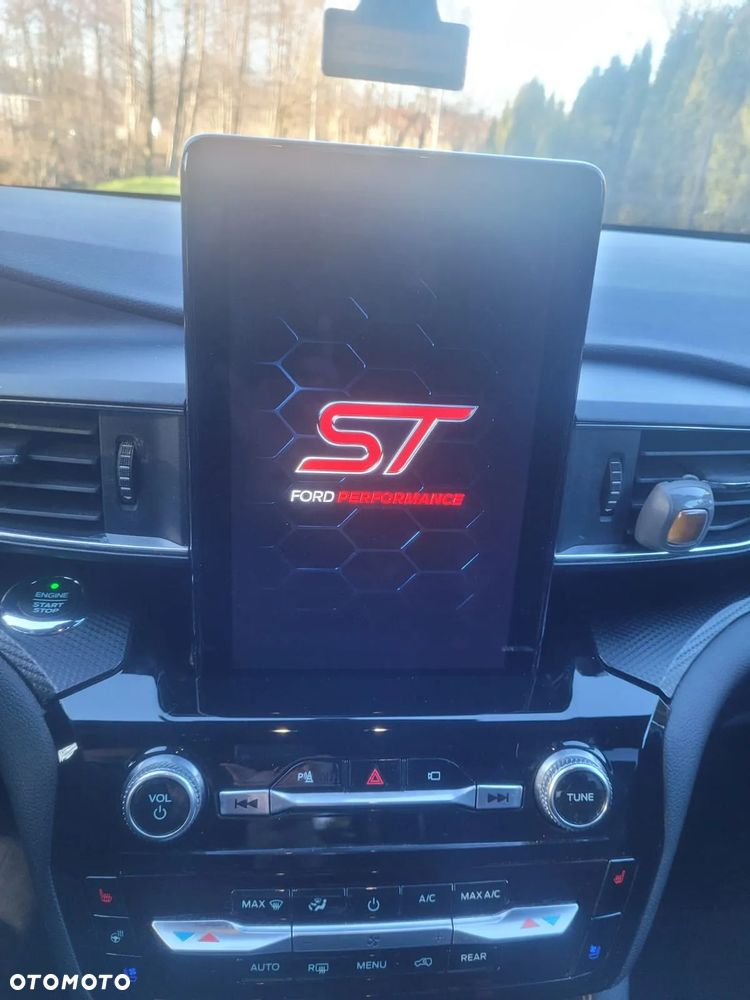
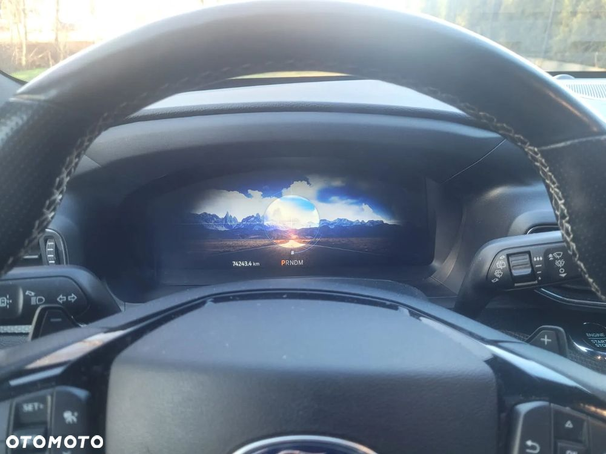
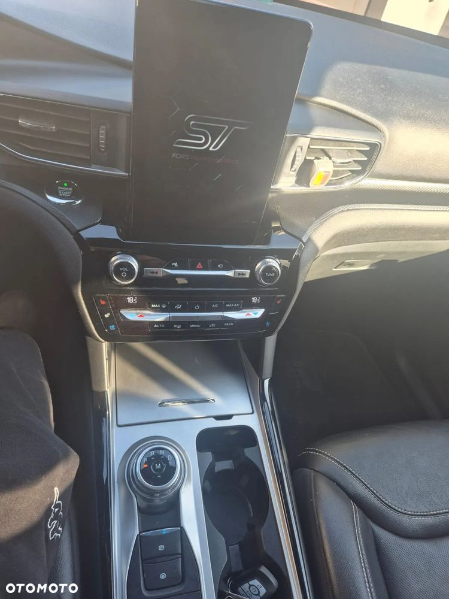
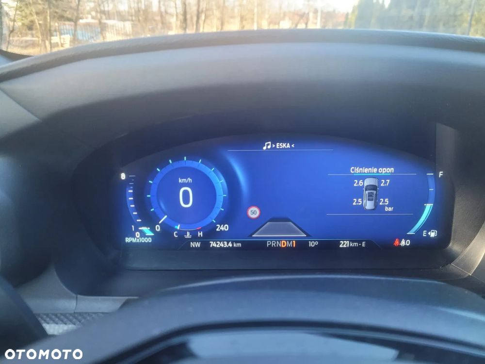
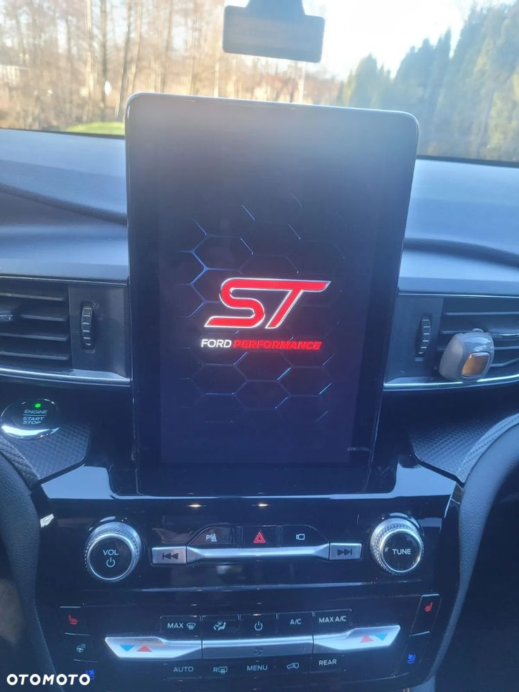
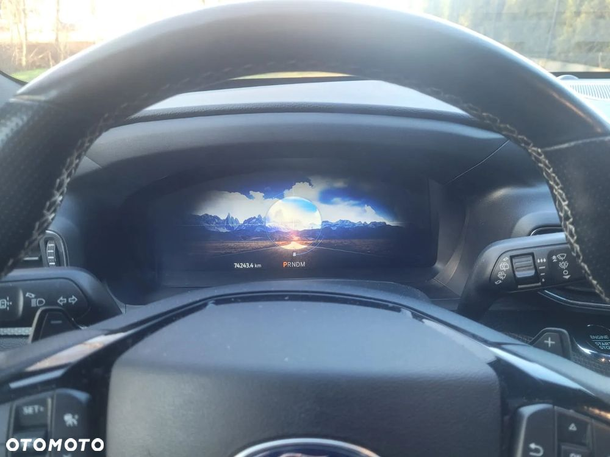
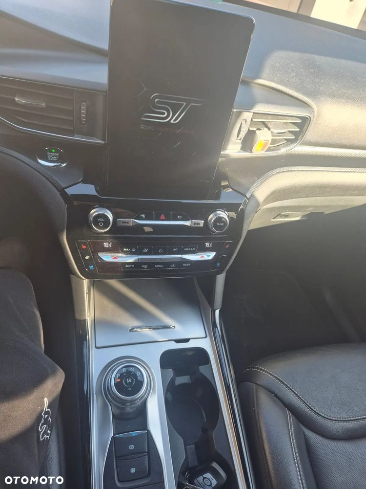
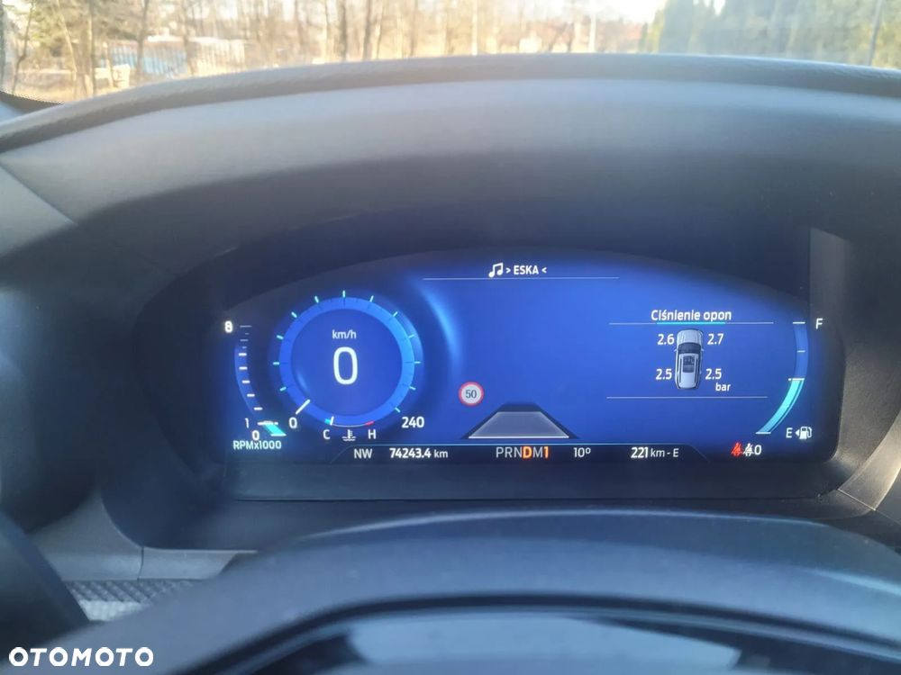

100% benzyna nie hybryda !
Sportowa edycja ST (400hp) ! Na pokładzie między innymi : 10 biegów, 4x4 pakiet zimowy, grzane i klimatyzowane fotele, aktywny tempomat "stop and go", czujniki martwego pola, czytnik pasów ruchu, park assist, nagłośnienie Bang Audio, panorama, hak, tempomat aktywny oraz klimatyzowane i grzana tylne fotele, ładowarkę indukcyjną itp. Jest to najbogatsza wersja wyposażenia w tym aucie. Dla osób oglądających ogłoszenie przez OLX widać tylko 8 zdjęc a na otomoto jest ich znacznie więcej.
Przypomnijmy, że wersja PERFORMANCE ST jest lżejsza i szybsza od Explorera Hybrid. Stylistycznie jest również kilka ciekawych zmian, dzięki temu jest milej dla oka. Do tego koła 21 a na nich nowe opony firmy PIrelli Scorpion 2 a na nich przejechane tylko 1200km za 6tys zł... !!! oraz nowy akumulator i nowe klocki z tyłu.
Samochód importowany w 2024 z USA. Pełna dokumentacja fotograficzna oraz potwierdzenie dotyczące przeprowadzonych prac. Żadnych chińskich zamienników, wszystko nowe z ASO FORD. Bez problemu można zabrać samochód na dodatkowy przegląd czy inspekcję. Umowa K/S na umowie pełna kwota. Dla zainteresowanych wyśle wszystkie zdjecia dokumentujące uszkodzenia w USA oraz podam VIN pojazdu. Samochód miał uszkodzone prawy przedni błotnik oraz zawieszenie gdzie wszystkie części są wymienione na nowe włącznie z każdą śrubką zamówioną w FORD POLSKA. Nie miał wystrzelonych poduszek powietrznych z elementów blacharskich wymieniony jedynie prawy błotnik. Elementy konstrukcyjne nienaruszone.
Jest to prawdziwa wersja ST PERFORMANCE, ten silnik w serii posiada 400 koni (otomoto nie widzi takiej wersji i pokazuje jedynie 350, zamiast 400).
Zapraszam na oględziny osobiste. Samochód w ciągłej eksploatacji.


 
